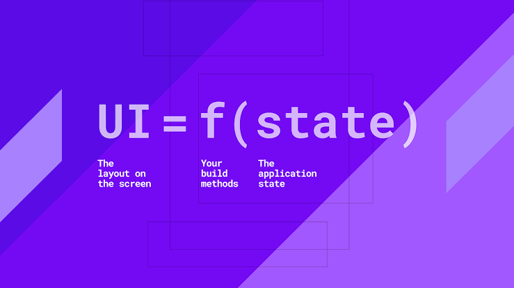

Small API.
Explicit state.
A compact state-management and dependency-injection package built around one idea: UI = f(state). No code generation. No provider taxonomy.
final api = Popsicle.inject((_) => ApiClient());
final theme = Popsicle.value(ThemeMode.system);
final counter = Popsicle.create(
(_) => CounterStore(),
);
counter.ui(
(context, state, store) => Text('$state'),
);A deliberately small surface.
Popsicle keeps composition, tiny state, structured state, and parameterized state separate without making you learn a family of provider types.
Dependencies
Typed API clients, repositories, services, storage, configuration, and other scoped dependencies.
Reactive values
Small standalone values that can render directly with .ui().
Stores
Structured feature state, behavior, async orchestration, effects, history, and streams.
Parameterized state
Independent Store identity and state keyed by runtime arguments.
Commit state. Emit effects once.
Persistent state and one-shot UI work are different channels. That distinction stays intact across rebuilds, history, and stream input.
Explicit transitions with commit()
class CounterStore extends Store<int> {
CounterStore() : super(0);
void increment() {
commit(state + 1);
}
}One-shot UI work stays outside state
profile.ui(
(context, state, store) => ProfileBody(state),
effect: (context, effect) {
// snackbar, navigation, dialog…
},
);Undo / redo is opt-in.
Add History<State> only where a feature needs snapshots. Effects are never recorded or replayed.
class EditorStore extends Store<EditorState>
with History<EditorState> {
EditorStore() : super(const EditorState());
}Streams feed the same Store.
No separate Stream Store hierarchy. listenTo() owns subscriptions and cancels them with the Store lifecycle.
listenTo(
messages,
onData: commit,
onError: (error, stack) {
effect(StreamFailed(error));
},
);
UI = f(state)
State is the durable snapshot. Methods, intents, and streams transition that snapshot. Effects represent occurrences that should happen once. The UI stays a projection of state rather than a second source of truth.
Build with less state-management ceremony.
Start with four declarations, Scope, Store, and .ui().